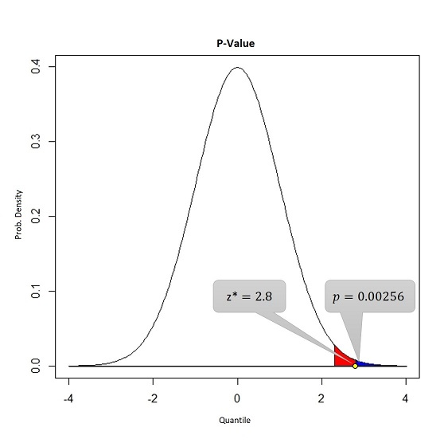

Motivation
The small story, that I am going to share with you today, is on Statistical Testing of Hypothesis. It is a method of statistical inference with a very powerful theoretical support in the literature and a wide domain of application, especially in today’s world of analytics and machine learning.
It was popularized early in the 20th century, early forms were used in the 1700s. The first use is credited to John Arbuthnot (1710) followed by Pierre-Simon Laplace (1770s), in analyzing the human sex ratio at birth.
The word Hypothesis means belief about something. People from various domains like theoretical research, medical industry, consumer packaged goods (CPG) industry etc., mainly deal with data to boost-up their research works, or to maximize their revenue, whatever may be the case, they use this important tool to justify their believes. Now, here the question comes…what are these believes about? The answer is parameters. For example: suppose you are going to calculate the average height of people in a district, which you can by measuring the height of each people and taking the average or by taking a sample of people from that district, calculating the sample average and making an inference about the average height.
If you go by the first approach, you need patience, man power, money and of course a lot of time, whereas in the second approach you can get a ruff estimate of the actual average height which will help you to draw an inference.
Now, clearly the actual average height is unknown as long as you are not dealing with all the people in that district. This unknown average height is called a parameter, often expressed as \mu and the sample average is known as statistic, expressed as \bar{X}.
By using a statistic, we try to get some plausible guesses about our parameter of interest. Since, we are guessing or having some believes about the parameter, these believes must be justified logically by the help of some mathematical tools as well as data. Hypothesis Testing comes here to rescue us.
An Intuitive Explanation
Before going into more rigorous definitions, let’s understand by taking another example. Suppose, by conducting a small survey, you picked up ten people having the heights (in ft.) as 6.8, 7.3, 6.0, 7.0, 6.3, 7.0, 6.5, 6.5, 7.0, 7.4. They are very tall, aren’t they? 🤔
Well, this is your artificial survey data, let’s not bother about actual height values. You can calculate the average which is 6.8 ft. But truly speaking, you won’t be satisfied by having a belief that actual average height of the people in that district is 6.8 ft. It can be for that specific sample you have collected. If you take another sample of size 10, you may get a different estimate…right? Yes, so what you have a achieved, is the random guess about the parameter (unknown height) based on a random sample.
Now, let’s define the various hypotheses that will be in your mind soon:
The Null Hypothesis, H_0: \mu = 6.4 = \mu_0
The Alternate Hypothesis, H_1: \mu > 6.4
Note that, \mu is used here to parametrize the scenario. The type of alternate hypothesis we are addressing here, is also called greater than type hypothesis and hence the test is called greater than type test.
Null hypothesis is the prior belief you have about the parameter, possibly by conducting other surveys in the adjacent districts i.e. by observing people from other districts, you believe average height may be 6 ft.. The alternate hypothesis is the belief you have gathered from the sample or the data. Since we are guessing based on the data in our hand, it’s very likely to guess wrong or in another words, we may encounter errors.
The Two Types of Error
There are two types of error that we are generally interested in:
Rejecting the null hypothesis when it is actually true, also known as Type-I error.
Failing to reject the null hypothesis when it is actually false, also known as Type-II error.
These two situations are generally expressed in terms of probabilities.
Let’s see how they have been defined in the literature,
Probability of type-I error: P(\text{Rejecting} \quad H_0 \quad \text{when it is true}) = \alpha
Probability of type-II error: P(\text{Failing to reject} \quad H_0 \quad \text{when it is false}) = \beta
Some Real Life Examples
I will try to relate the definitions with couple of examples:
Suppose the Honorable judge is about to give his verdict to the accused. Now let’s assume that our null hypothesis or prior belief about that person is, the person is not guilty. If the judge’s verdict is against the accused even if the person has really not done anything wrong, then it is the Type-I error, whereas if the verdict is in favor of the accused when in reality the person has done something wrong, then it is the Type-II error. If you’d think for a moment, you would understand the fact that Type-I error is more severe in nature.
This one is going to be of great impotance for the society. We know that almost every country has their own military radar system to detect any missilies aimed at them. Assume that, the null hypothesis is the enemy is in war mode, they will attack. Now, could you imagine the situation, if the military radar system would have failed to detect the missiles that had been aimed at your country and they were few miles away from their target…the lives of innocent citizens would have been devastated.
fig-1
Having understood the importance of Type-I error in decision making, the usual tendency of the experimenter is to keep the chance of making Type-I error fixed at a very low level, which, by years of research and experimentations, has been chosen as 1% or 5%, depending on the situation.
The Testing Criteria or The Decision Rule
Having identified the possible scenarioes which may take us to the wrong direction, it’s time to decide which one to go for, based on the current data in hand. The tool which will enable us to make a decision, is going to be the statistic along with a decision rule.
Having the data ready, we can find the realization of the statistic, i.e. \bar{x} and to support our null hypothesis, we are supposed to compare this \bar{x} and \mu_0. Here we perform an additive comparison i.e. we measure the difference between these two values. If the difference is too high, then it depicts the fact that our data is not supporting the null hypothesis.
Wait…, the phrase too high is subjective, isn’t it? That means the threshold to judge whether the difference is too high or not, depends on the experimenter.
To avoid this problem, Statisticians came up with a universal procedure to compute the threshold (sometimes called cut-off value). It is probabilistic in nature which utilizes the the sampling distribution of the statistic along with \alpha.
Before going to understand the computation process, let’s modify the statistic. Instead of \bar{X}, we are going to take \frac{\bar{X} - \mu_0}{\sqrt{\frac{\sigma^2}{n}}}. From the theory of sampling distribution, if \bar{X} \sim N(\mu_0, \sigma^2), then Z = \frac{\bar{X} - \mu_0}{\sqrt{\frac{\sigma^2}{n}}} \sim N(0, 1) i.e. the transformation makes the distribution simplified and easy to deal with.
To compute a universal threshold or cut-off point (\tau_{\alpha}), \alpha is first kept fixed at a certain level, usually 0.01 or 0.05, then a quantile value is computed such that beyond the quantile area under the curve is equal to \alpha. The figure, given below, will make the idea clear.

As we can see in the above figure, the universal cut-off is 2.32. Now we are in a situation to make a decision. If the realization of \frac{\bar{X} - \mu_0}{\sqrt{\frac{\sigma^2}{n}}} is more than \tau_{\alpha}=2.32, then we can say that the data is not supporting H_0, hence we should reject it, otherwise we can accept H_0.
For the survey data example, sample size is n=10, the sample average is \bar{x}=6.8 ft. and assuming \sigma to be known as 0.45 ft., the realization of the statistic, also known as z^{\star}, is \frac{\sqrt{10} \times (6.8 - 6.4)}{0.45}=2.8 and it is certainly larger than \tau_{\alpha}. Hence, the average height of people of that district cannot be taken as 6 ft., based on the sample in our hand.
The Probabilistic Decision Rule
The decision we made in the last section, was based on a threshold or a cut-off point. It could have been represented in an alternative way, by using a two probability scores, one of which is known to us i.e. \alpha = 0.01.
The second one is computed as the area under the density curve beyond the observed value of the statistic z^{\star} i.e. p = P\left[Z > z^{\star}\right], considering null hypothesis to be true, where Z \sim N(0, 1). This p is known as p-value of the test.

In the above figure, blue region is the p-value and the red region is the \alpha. Note that, the realization of the statistic i.e. z^{\star} is larger than the cut-off, that is why the p-value is smaller than \alpha.
Therefore, in an alternative way, we can say that if p-value of the test is smaller than probability of Type-I error, then we should reject the null hypothesis, otherwise it should be accepted. Almost all the modern analytics tools provide p-value for any kind of hypothesis test.
Assumption of the Test and Conclusion
The test I have discussed here, is based on a single assumption: pupulation variance (\sigma^2) is fixed and known beforehand. It could be unknow as well, in that case, first we had to estimate it from the data. It would also change the distribution of the test statistic.
Regarding the final conclusion: well, we have seen that the null hypothesis is not supported by the data in our hand, so it should not be accepted.
Future Scope
In this article, testing procedure for a specific setup has been covered. There are lot more to look into, specifically the scenarios when population variability measure \sigma is not known, comparing variabilities from two different populations etc. Those things will be covered in near future.
Note that alternative hypothesis can also have three different variants: less than type and unequal type, we have only covered one.